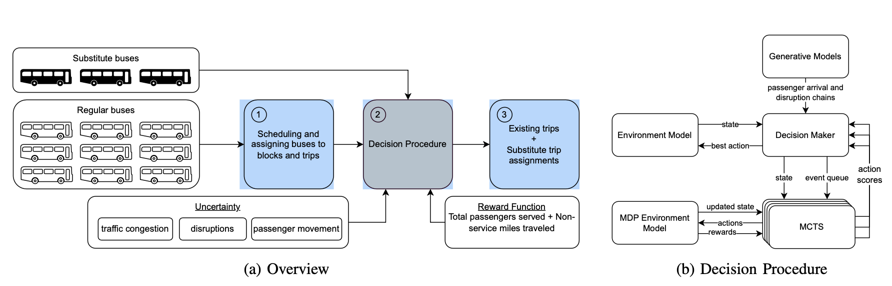

Download
Abstract
Public bus transit systems provide critical transportation services for large sections of modern communities. On time performance and maintaining the reliable quality of service is therefore very important. Unfortunately, disruptions caused by overcrowding, vehicular failures, and road accidents often lead to service performance degradation. Though transit agencies keep a limited number of vehicles in reserve and dispatch them to relieve the affected routes during disruptions, the procedure is often ad-hoc and has to rely on human experience and intuition to allocate resources (vehicles) to affected trips under uncertainty. In this paper, we describe a principled approach using non-myopic sequential decision procedures to solve the problem and decide (a) if it is advantageous to anticipate problems and proactively station transit buses near areas with high-likelihood of disruptions and (b) decide if and which vehicle to dispatch to a particular problem. Our approach was developed in partnership with the Metropolitan Transportation Authority for a mid-sized city in the USA and models the system as a semi-Markov decision problem (solved as a Monte-Carlo tree search procedure) and shows that it is possible to obtain an answer to these two coupled decision problems in a way that maximizes the overall reward (number of people served). We sample many possible futures from generative models, each is assigned to a tree and processed using root parallelization. We validate our approach using 3 years of data from our partner agency. Our experiments show that the proposed framework serves 2% more passengers while reducing deadhead miles by 40%.
Figure 1: (a) An Overview of the stationing and dispatch problem. (b) Our proposed approach

Citation
Talusan, J. P., Han, C., Mukhopadhyay, A., Laszka, A., Freudberg, D., & Dubey, A. An Online Approach to Solving Public Transit Stationing and Dispatch Problem.
@article{talusanonline,
title={An Online Approach to Solving Public Transit Stationing and Dispatch Problem},
author={Talusan, Jose Paolo and Han, Chaeeun and Mukhopadhyay, Ayan and Laszka, Aron and Freudberg, Dan and Dubey, Abhishek}
}